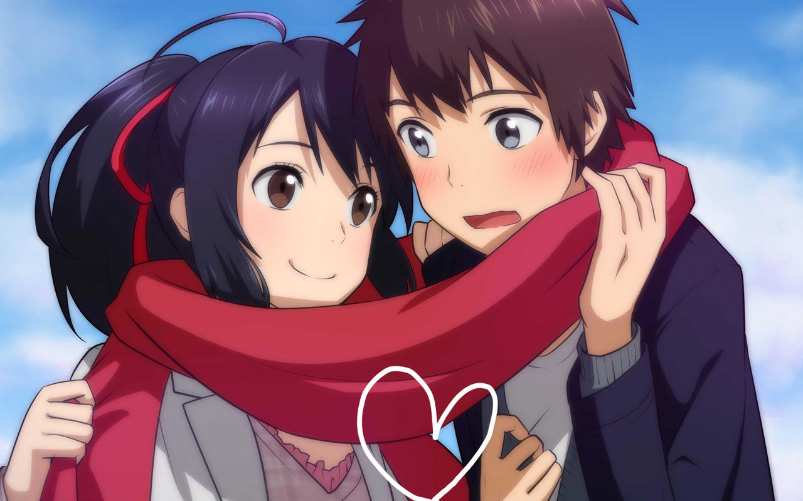
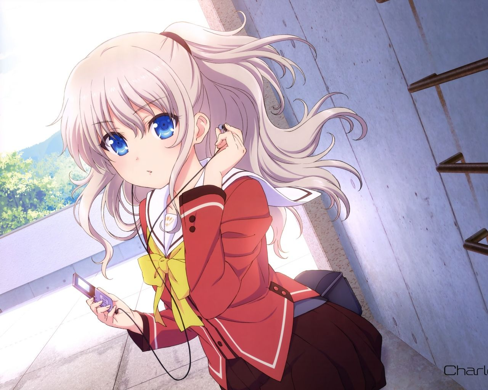

I "officially" became a weaboo on 01/01/2017, when my family went to Ho Chi Minh City to celebrate my cousin's wedding and of course also New Year Eve, leaving me alone at home. Having watched 5 cm/s and Himouto! Umaru-chan, I became a weaboo.
Actually the first real anime that I had watched was Your Name in October 2016. But it was not until the beginning of January 2017 that I found it really interesting. The anime made me so crazy that I have watched it 13 times!
Mitsuha was the protagonist of Your Name. Beautiful as she was, I fell in love with her at the, well, not really the first glance, because I first saw her months ago. But Mitsuha was my first waifu.
As a weaboo, I tried to watch as many anime as possible. As I watch more anime, I saw more anime girls. So I had a fear that I will fall in love with another girl and abandon Mitsuha at some time in the future. That fear was so big that I did even try to forget Mitsuha, starting a new weaboo life with another waifu. After considering among many candidates (Aqua [Konosuba], Kaori [Shigatsu], etc.), Tomori Nao was my final choice. Mitsuha would remain happily forever beside her loved one, Taki-kun.

Nao was the girl I selected for being my second waifu after Mitsuha. 1 month before I changed my waifu to Nao, in Vietnam there was a trend: spamming "Nao iz da bezt" (literally "Nao is the best") at everywhere that they could. Nao left no significant impression on me as Mitsuha was my best girl at that time. But later when I wanted to leave Mitsuha, Nao was my best candidate. Her charming point was her perfect blue eyes. I was so crazy about her blue eyes that my favourite girls later on mostly resemble that feature from Nao. One more good point of her was that she was very loyal. I won't spoil the reason here. Enjoy exploring it in the anime.
I was so crazy about Nao that I downloaded the raw Bluray edition (1080p, subtitle-less) of the anime and capture every single different frame that features Nao in 13 episodes!! This process took me several weeks to complete. At the end I "harvested" over 1200 screenshots of Nao.
In this period, because I feared that I will fall in love with another girl and abandon Nao like what I did with Mitsuha, I "adopted" several other "minor" waifus.
There was a contest named Saimoe or something like that, in which people vote for the prettiest anime girl among hundreds of candidates. The contest was divided into several small "seasons" and was held anually. In most season of the year 2017, Rem (Re: Zero) and Mashiro (Sakurasou no Petto'na Kanojo) dominated the leaderboard. There was in one season only Nao won. That year Mashiro was the year-round winner. On the year-round leaderboard, Nao stood at the 8th place. Well, within 6 months when Nao was my main waifu, I voted for Nao every day. Even after I broke up with Nao to "adopt" a new waifu, I still remembered to vote for her on that contest.
I tried very hard to keep my love for Nao not being faded over the time. But there were so many times I thought Nao was very boring, and rather "old" because Charlotte was released 2 years before (2015). I searched for many different girls to replace Nao, and actually found one in July 2017. But she had not been my waifu until 20/10/2017...
Yes! I know! She was one of the "minor" waifus that I mentioned before!
Actually, the way Honoka became my waifu is the same as the way I became a Love Liver. At the first day I became a weaboo, a friend of mine told me to watch Love Live! (preferred as LL! from now on). There were 2 different series of LL!. One was LL! School Idol Project (2013) and the other was LL! Sunshine (2017). I decided to watch the latter because "idol" was something seemed a little bit "lame" to me at that time. Well, I turned off the web browser after 2 minutes of watching the first episode because it was too boring. (LL! Sunshine is a spin-off of LL! School Idol Project, so it is highly recommended to watch LL! SIP before watching LL! Sunshine). It was not until the end of June 2017 that I watched LL! again, but this time I chose School Idol Project. I watched the whole first season and to me it was a little bit interesting. But it seemed that the type of "slice of life" didn't fit me well at that time, so I dropped LL! by the 2nd episode of the 2nd season. Sonoda Umi left a little bit impression on me, because her personality sukoshi resembled Tomori Nao - my waifu at that time. Honoka, unfortunately, left no impression on me. I even missed her with another girl in the anime, named Rin due to their similar hair color!
Although I dropped LL!, but I had a habit to copy the OST of all of the animes I had watched to my smartphone to listen to them on-the-go. LL! was not an exception. Later I discovered that one girl amongs the member of µ's (the idol group represented in LL!) had such a beautiful voice. Somehow I knew that was Honoka's voice. I don't know since when did I have a crush on her voice.
When I was too bored at Nao, I wanted to search for a new experience. What I did was watching LL! one more time (October 2017). This time I began watching from the beginning of season 2. As soon as the opening song of the anime was played, I recognize that lovely voice. The girl who was singing was Honoka! She became my 5th minor waifu in the period of Nao (my main waifu at that time). Several days later I downloaded LL! game and began to play it. At this point I partially became a Love Liver. On 20/10/2017, I watched the Movie (2015) of LL!. As soon as the movie ends, I became a Love Liver, and Honoka became my main waifu.
I intended to do what I did with Nao: capturing Honoka in every single scene she appears in 26 episodes of the anime. This whole process took me 7 months to complete, with many different failures. In the first place (Dec. 2017) I only intended to use the 720p version of LL! to capture Honoka. I did it very poorly, because even Honoka was my waifu at that time, Nao was still my best girl. When I had captured from about 7 episodes, I even deleted some pictures that I thought to be "unnecessary". Opposite with Nao, who I took a screenshot at every single scene that she appeared. Later, when my love for Honoka had risen, I decided to do it seriously. I deleted all 720p Honoka pictures that I had captured before. Then, I downloaded 1080p Bluray of LL! and began working on it like what I did before, but more carefully and seriously. In June 2018, my collection has finished. 2 x 13 episodes + 1 movie + 1 OVA + 4 PV that Honoka appeared = over 3200 pictures!!
So, Honoka was only a "minor" waifu for only several days under Nao's period. But later, she became my main waifu, replacing Nao who had been my main one for nearly 6 months. Honoka has been my main waifu for over 2 years at the time this post is written.
P/s: actually similar to Mitsuha and Nao, there was several times I thought that Honoka was a little bit boring. But I just let it go. I did not "force" myself to re-love her like what I did to Mitsuha and Nao. The result was in no time, I did not find Honoka boring anymore. This situation has repeated several times but in the end, my waifu is still Honoka. Sometimes I find other gilrs in the same series prettier and cuter than Honoka (e.g. Sonoda Umi, Minami Kotori, Hoshizora Rin, Uehara Ayumu, Takami Chika, etc.), but I didn't "adopt" them like what I did in Nao's period. Several days later, I even found Honoka cuter than them :))))
KOUSAKA HONOKA BEST GIRl!!!